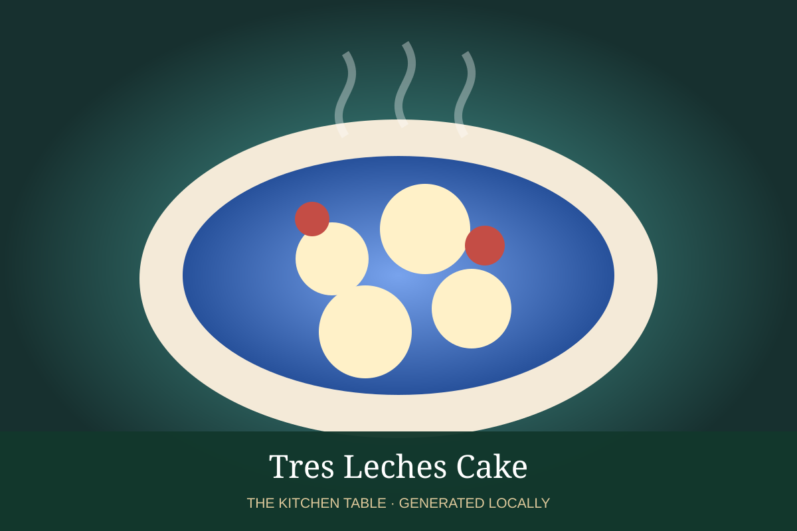

MEXICAN · DESSERTS & DRINKS
Tres Leches Cake
A light sponge soaked in three milks and topped with softly whipped cream.

Ingredients
- 5 eggs, separated
- 1 cup sugar
- 1 cup flour
- 1 tsp baking powder
- 1/3 cup whole milk
- 1 can evaporated milk
- 1 can sweetened condensed milk
- 1 cup heavy cream
- Vanilla and cinnamon
Method
- Whip egg whites to soft peaks; gradually beat in sugar, then yolks.
- Fold in flour and baking powder, followed by whole milk. Bake at 350°F until springy.
- Pierce the cooled cake and slowly pour over evaporated milk, condensed milk, and cream.
- Chill at least 4 hours. Finish with whipped cream and cinnamon.